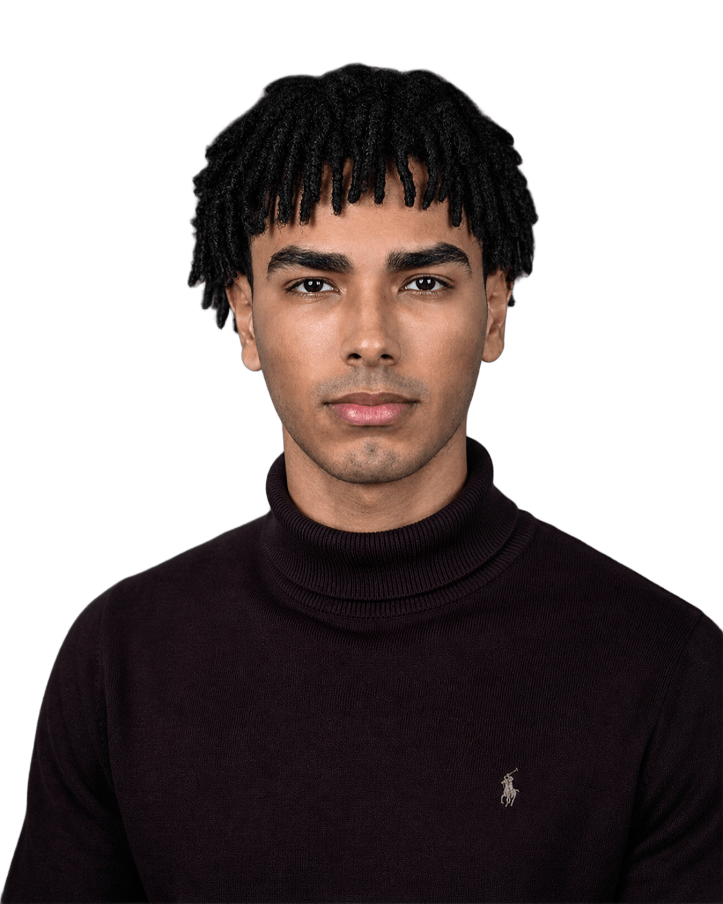

01 / Our mission
To bring people together to tackle challenges facing communities in Sudan through shared knowledge, local experience and practical action.
We believe the people closest to a challenge should have a voice in shaping its solution. SIRAI brings shared knowledge, local experience and practical action together.

Sudan is living through difficult times. But even in hardship, people continue to look out for one another, share what they have and find ways forward. SIRAI starts with that spirit.
To bring people together to tackle challenges facing communities in Sudan through shared knowledge, local experience and practical action.
A Sudan where communities have the opportunity, resources and voice to shape their own futures.
Water is one starting point, not our entire purpose. Our work will grow around the priorities communities identify.
Essential services, energy, water and everyday challenges.
Learning, accessible information and practical skills.
Care for local resources and possibilities for sustainable livelihoods.
Backing local voices, decisions and community ownership.
These are areas of interest, not claims of ongoing programmes.
WaterShare is our first practical resource: a simple, multilingual tool to help communities discuss shared water collection and daily needs. It is a starting point. We hope to develop other resources shaped by what people actually need.

I grew up knowing how much people in Sudan can do for one another, especially when things aren't easy. Before SIRAI, I helped organize a water-collection schedule for 54 households in Port Sudan and worked alongside local volunteers on mangrove restoration. They were simple efforts, but they stayed with me.
Watching what Sudan is going through today is painful. I don't pretend that one small initiative can fix everything. But I do believe we can start somewhere, listen to people, share what we know and try to make everyday life a little better. If SIRAI makes even a tiny difference to someone's day, that would mean a great deal to me.
I'm an electrical and electronic engineering graduate, and I'm still learning. I started SIRAI because I wanted to put some of that learning to use alongside the people who understand their communities best. I hope this becomes something we build together.
The community projects mentioned here predate SIRAI and are part of my personal experience. SIRAI is an independent initiative still in development.
We'd rather show how things grow than claim more than we've done.
Create SIRAI's identity and share our first public resource.
Seek community feedback, improve the tools and understand real priorities.
Develop small, accountable projects with local people when it is safe and feasible.
“The future is not built for communities. It is built with them.”We are starting with curiosity, care and a willingness to learn.Connect with the founder ↗